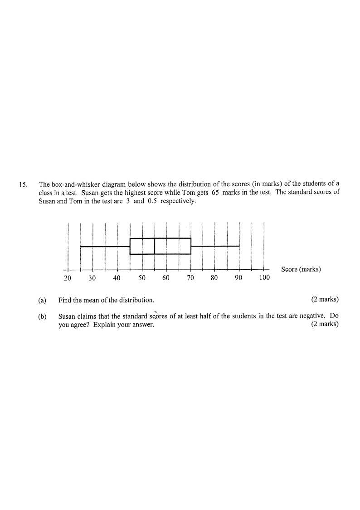

The box-and-whisker diagram below shows the distribution of the scores (in marks) of the students of a class in a test. Susan gets the highest score while Tom gets $65$ marks in the test. The standard scores of Susan and Tom in the test are $3$ and $0.5$ respectively.
(a) Find the mean of the distribution. [2 marks]
(b) Susan claims that the standard scores of at least half of the students in the test are negative. Do you agree? Explain your answer. [2 marks]

From the diagram (and the question):
Highest score (Susan) $= 90$ marks, Tom's score $= 65$ marks.
Let $\mu$ and $\sigma$ be the mean and the standard deviation of the distribution.
Standard score $z = \dfrac{x-\mu}{\sigma}$. Hence
Susan: $\dfrac{90-\mu}{\sigma}=3$ → $90-\mu=3\sigma$
Tom: $\dfrac{65-\mu}{\sigma}=0.5$ → $65-\mu=0.5\sigma$
A standard score (z-score) measures how many standard deviations a value sits from the mean.
Subtract the two equations:
$(90-\mu)-(65-\mu)=3\sigma-0.5\sigma$
$25 = 2.5\sigma \;\Rightarrow\; \sigma = 10$
Substitute $\sigma=10$ into $90-\mu=3\sigma$:
$90-\mu=30 \;\Rightarrow\; \mu = 60$
Elimination is quickest here because the two left-hand sides both contain $-\mu$.
Thus the mean of the distribution is
$\boxed{\mu = 60 \text{ marks}}$
Alternatively: from $90-\mu=3\sigma$ and $65-\mu=0.5\sigma$, directly obtain $\mu=60$ and $\sigma=10$.
A standard score is negative exactly when the raw score is below the mean.
From the box-and-whisker diagram, the median score is $55$ marks.
But the mean is $60$ marks, so the median is less than the mean.
By definition of the median, at least half of the students scored $55$ marks or below.
Since the median $55 <$ mean $60$, at least half of the students scored below the mean.
Therefore at least half of the students have negative standard scores.
So Susan's claim is agreed.
A negative standard score simply means the score is lower than the mean (60 marks).
Question. In a test, Peter's score of \(88\) has standard score \(2\) and Mary's score of \(61\) has standard score \(-1\). (a) Find the mean and the standard deviation. (b) The median score is \(66\). A teacher claims that at least half of the students have negative standard scores. Do you agree? Explain.